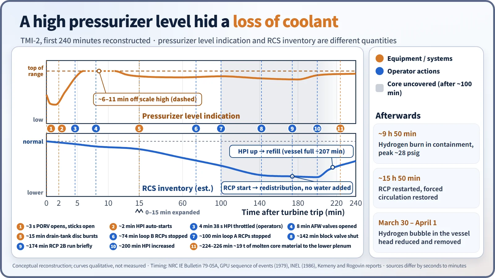
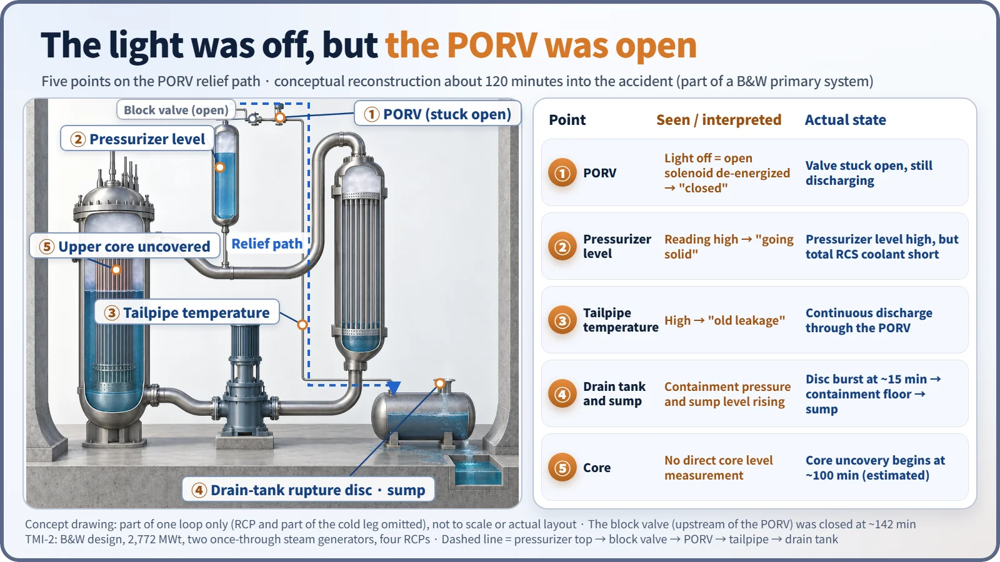
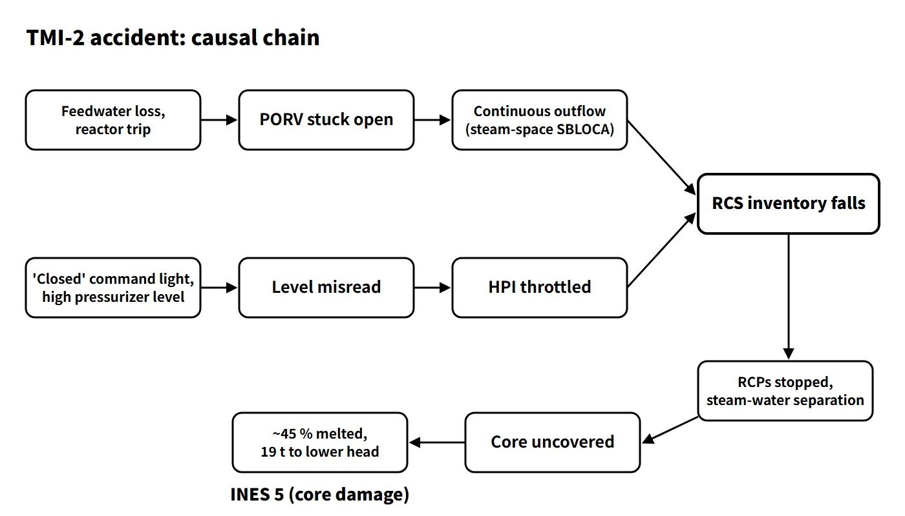

Accidents, Safety Analysis & Severe Accidents · C-SA-022
TMI-2 Accident — A Stuck-Open PORV Small-Break LOCA and the Pressurizer Level Trap
A stuck-open PORV turned a feedwater transient into a steam-space small-break LOCA, and a misleading pressurizer level led to throttled HPI and a 45 % core melt.
The TMI-2 accident happened on 28 March 1979 at Three Mile Island Unit 2 in the United States (a B&W PWR, 2,772 MWt): during a loss-of-feedwater transient the pressurizer PORV stuck open, producing a steam-space small-break LOCA, and the operators, relying on pressurizer level, throttled high-pressure injection (HPI) until about 45 % of the core had melted (INES Level 5).
This entry covers the accident itself: sequence, consequences and lessons.
Principle and mechanism
Sequence of events (times measured from the turbine trip, about 04:00:37)
- 0 s: During maintenance on the condensate polishers, the condensate and main feedwater pumps tripped (water entering the instrument-air system is the presumed cause), and the turbine tripped.
- About 3 s: With less heat removal from the primary side, RCS pressure rose and the PORV opened at its 2,255 psig setpoint.
- About 8 s: The reactor tripped on high pressure (2,355 psig).
- About 13 s: Pressure fell below the 2,205 psig closing setpoint, but the PORV did not close. The control-room light showed only the solenoid's close command, and the operators concluded the valve was shut.
- 0–8 min: The auxiliary feedwater pumps started, but block valves left closed after a test two days earlier kept water from reaching the steam generators. They were found and opened at 8 minutes.
- About 2 min: HPI actuated automatically on low RCS pressure.
- 4 min 38 s: Pressurizer level rose quickly (off scale high at about 6 minutes, back in range at about 11 minutes but still high), so the operators throttled HPI and increased letdown to keep the pressurizer from "going solid".
- About 15 min: The rupture disc on the drain tank burst and coolant spilled onto the containment floor.
- About 74 and 100 min: Vibration from entrained steam grew, and all four RCPs were stopped. With forced circulation gone, steam and water separated.
- About 100–110 min: The top of the core began to uncover, and the zirconium–steam reaction in the cladding produced hydrogen.
- About 142 min (around 06:22): The PORV block valve was closed and the discharge stopped.
- About 174 min: RCP 2B was run briefly; water already in the system was redistributed into the vessel, quenching and shattering the overheated core (total inventory did not increase).
- About 200 min: HPI was injected at high flow, and the reactor vessel was refilled at about 207 minutes.
- About 224 min: About 19 t of molten material flowed down into the lower head.
- About 9 h 50 min: Hydrogen burned inside containment, and pressure spiked to a peak of about 28 psig (0.19 MPa(g)); the containment boundary kept its integrity.
- About 15 h 50 min: One RCP was restarted and forced circulation was restored.

Why the operators were misled — the pressurizer level trap
The PORV sits at the top (steam space) of the pressurizer, downstream of its block valve. When it sticks open, it becomes a small-break LOCA connected to the pressurizer steam space (the outflow can change from steam to a two-phase mixture). Once pressure falls to saturation, steam voids form in the hot legs and the core. That void volume pushes coolant up into the pressurizer, and the flow out through the PORV also draws water upward. The result is a gap: the pressurizer is filled high with water, yet that level no longer represents the total RCS inventory.
Training at the time stressed "never let the pressurizer go solid", and there was no instrument that showed subcooling margin or core water level directly. The PORV tailpipe temperature was high, but it was attributed to existing leakage. A similar event had occurred at Davis-Besse in 1977, where HPI was reduced while the PORV was stuck open, but the warning was not shared across the industry. A design feature also contributed: the B&W once-through steam generators hold little secondary-side water and dry out within minutes of losing feedwater, so RCS pressure rises quickly and the PORV opens often.

What it means in a plant
Consequences
| Item | Details |
|---|---|
| Core | At least 45 % (about 62 t) melted; about 19 t relocated to the lower head |
| Reactor vessel | Not penetrated (part of the lower head ran hot, then cooled) |
| Containment | Boundary integrity maintained; hydrogen burn peak about 28 psig |
| Releases | Noble gases about 2.5–10 MCi (about 90–370 PBq, mainly Xe-133); I-131 about 15 Ci (about 0.55 TBq) |
| Doses | About 2 million nearby residents averaged about 0.01 mSv; maximum at the site boundary below 1 mSv; collective dose within 80 km about 20–35 man·Sv |
| Health effects | No detectable radiation health effects (NRC and state epidemiological studies) |
The INES Level 5 rating is a retrospective assessment. Its basis is not the amount released but severe core damage under the radiological barriers and control criterion; judged on releases alone, the event falls well short of Level 5. On 30 March the governor advised pregnant women and preschool children within 5 miles to evacuate. There was also concern that the hydrogen bubble in the upper vessel might explode, but with no oxygen present, combustion inside the vessel was practically impossible. The bubble was vented away by 1 April.
Lessons — design and operation
- Design: direct indication of the actual position of relief and safety valves; monitoring of inadequate core cooling with subcooling margin monitors, core-exit temperatures and reactor vessel level; consideration of automatic PORV isolation; automatic start of auxiliary feedwater with flow indication; RCS high-point vents and post-accident sampling.
- Operation: symptom-based EOPs that look at symptoms (critical safety functions) rather than at the initiating event; RCP trip criteria for SBLOCA; a shift technical advisor (STA) and an SPDS; control-room human-factors reviews and stronger simulator training.
- Organization and emergency response: off-site emergency plans and emergency planning zones, and operating-experience sharing through INPO. The Kemeny Commission placed the root cause in people, organizations and "mindset" rather than in equipment.
Today's symptom-based EOPs, SAMGs and accident management framework are an extension of these lessons.
Worked example — relief valves needed for decay heat
Take a 4,000 MWt core with decay heat of 3 % at 100 s after shutdown, a flow area of 0.002 m² per valve and a steam relief capacity of 12,000 MW/m². Decay heat is 4,000 × 0.03 = 120 MW and one valve relieves 0.002 × 12,000 = 24 MW, so 120/24 = 5 valves. In reality the PORV is not designed for decay-heat removal, and feed-and-bleed is evaluated together with HPI capacity.
Regulatory and design criteria
The main regulatory anchors are the US NRC's post-TMI documents, for example:
| Basis | Key point |
|---|---|
| Kemeny report (Oct 1979), Rogovin report (Jan 1980) | Root-cause analyses by the President's Commission and the NRC Special Inquiry Group |
| NUREG-0660 (May 1980) → NUREG-0737 (Nov 1980), Supplement 1 (1982) | TMI Action Plan and clarification of its requirements |
| Key NUREG-0737 items | I.A.1.1 STA, I.C.1 improved EOPs, I.D.1 control-room design review, I.D.2 SPDS, II.B.1 RCS vents, II.D.3 valve position indication, II.E.1.2 automatic auxiliary feedwater start, II.F.2 ICC instrumentation, II.K.3.1 automatic PORV isolation, II.K.3.5 RCP trip |
| 10 CFR 50.47 and Appendix E (1980), NUREG-0654 | Emergency planning; EPZs (about 10 miles and 50 miles) |
| 10 CFR 50.44 | Strengthened hydrogen control requirements |
Easily confused pairs
| TMI-2 (1979) | Chernobyl Unit 4 (1986) | Fukushima Daiichi Units 1–3 (2011) | |
|---|---|---|---|
| Reactor type | B&W PWR | RBMK-1000 (graphite-moderated boiling light water) | GE BWR (Mark I) |
| Initiator | Feedwater loss + stuck-open PORV + misdiagnosis | Reactivity excursion during a low-power test | Earthquake and tsunami → prolonged SBO |
| Core | About 45 % melted | Core destroyed, graphite fire | Units 1–3 melted |
| Vessel and containment | Vessel not penetrated, containment intact | No full containment building, core exposed | Vessels damaged, containment damaged and leaking |
| INES | 5 (barriers) | 7 | 7 (provisional, Units 1–3 combined) |
| Releases | Mostly noble gases, very little iodine | Massive | Large (smaller than Chernobyl) |
Also remember: pressurizer level ≠ RCS inventory. Under saturated conditions the level does not represent inventory, so confirm with subcooling margin and reactor vessel level.
Key points at a glance
- Overview: 28 March 1979, TMI-2 (B&W PWR, 2,772 MWt), loss-of-feedwater transient.
- Initiator: main feedwater lost → turbine and reactor trip → PORV stuck open (steam-space SBLOCA).
- Misdiagnosis: the light showed only the close command; the rising pressurizer level was taken as "going solid" → HPI throttled.
- Progression: outflow + throttled HPI → inventory loss → RCPs stopped, steam–water separation → core uncovered (from about 100 min) → block valve closed at 142 min → high-flow HPI at 200 min.
- Outcome: about 45 % (62 t) melted, about 19 t in the lower head, vessel not penetrated, containment intact, hydrogen burn peak 28 psig.
- Releases and doses: mostly noble gases; average about 0.01 mSv, maximum below 1 mSv.
- INES 5: based on barriers (core damage).
- Lessons: direct valve position indication, ICC instrumentation, symptom-based EOPs, RCP trip criteria, STA and SPDS, emergency planning, INPO (NUREG-0737).
